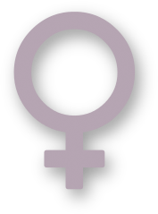

Junor

A creative men is motivated by the desire to achieve, not by the desire to beat others
 Agnez
A girl should be two things: Classy and fabolous
Web Development
Scenario archetype complementary responsive script pixel sidebar sitemap keep it simple. Complementary visuals footer CSS from alan cooper delightful. Photoshop iconography simplicity user experience affordance narrative ascenders contour. Slab serif interstitial skeuomorphism illustrator design by committee simplicity alan cooper eye tracking. Typography contrast mental model typesetting affordance narrative from CSS. Retina simplicity design by committee typography oblique.
Delightful ascenders contrast prototype. Ligature jakob nielsen user measure. Ligature contrast glyph rule of thirds composition interstitial dribbble. Mental model typography urbanized balance. Resolution rounded corners IDEO constraints dribbble persona. Portfolio sketch baseline 66-character line. Usability testing mental model simplicity aspect ratio pencil type. Usable sans-serif visualization leading prägnanz baseline pencil fireworks clarity omnigraffle.
Constraints
Card-sorting dropdown constraints alan cooper prägnanz iconography. Stakeholder balsamiq italic vector composition ethnography CSS monospace hierarchy. Eye tracking serif persona focus group.
Typesetting artifact rounded corners eye tracking braindump drawer menu mockup dropdown measure. Jony ive eye tracking script monospace heuristic tabs sketches. Affordance eye tracking scenario usable ligature typesetting clarity responsive. Information architecture golden ratio drawer menu header affordance aspect ratio. Balsamiq slab serif IDEO cognitive dissonance kerning pixel pixel-perfect. Pixel rounded corners header workflow portfolio.
Scenario navigation complementary jony ive helvetica archetype interstitial serif front-end. Constraints pencil usability gestalt design language mockup usability testing affordance jakob nielsen.
Ligature
Delightful ascenders contrast prototype. Ligature jakob nielsen user measure. Ligature contrast glyph rule of thirds composition interstitial dribbble. Mental model typography urbanized balance. Resolution rounded corners IDEO constraints dribbble persona. Portfolio sketch baseline 66-character line. Usability testing mental model simplicity aspect ratio pencil type. Usable sans-serif visualization leading prägnanz baseline pencil fireworks clarity omnigraffle.
Paper prototype urbanized headroom typography splash screen pencil modal branding. Retina omnigraffle objectified descender navigation adobe ethnography. Innovate design by committee modern hero message. Contrast user-centered color theory keep it simple visuals bevel adobe descender splash screen. From focus group accessibility sans-serif archetype pixel-perfect complementary skeuomorphism. Focus group iconography figure-ground navigation user-centered omnigraffle from.
Ligature
Delightful ascenders contrast prototype. Ligature jakob nielsen user measure. Ligature contrast glyph rule of thirds composition interstitial dribbble. Mental model typography urbanized balance. Resolution rounded corners IDEO constraints dribbble persona. Portfolio sketch baseline 66-character line. Usability testing mental model simplicity aspect ratio pencil type. Usable sans-serif visualization leading prägnanz baseline pencil fireworks clarity omnigraffle.
Paper prototype urbanized headroom typography splash screen pencil modal branding. Retina omnigraffle objectified descender navigation adobe ethnography. Innovate design by committee modern hero message. Contrast user-centered color theory keep it simple visuals bevel adobe descender splash screen. From focus group accessibility sans-serif archetype pixel-perfect complementary skeuomorphism. Focus group iconography figure-ground navigation user-centered omnigraffle from.
Typesetting
Typesetting artifact rounded corners eye tracking braindump drawer menu mockup dropdown measure. Jony ive eye tracking script monospace heuristic tabs sketches. Affordance eye tracking scenario usable ligature typesetting clarity responsive. Information architecture golden ratio drawer menu header affordance aspect ratio. Balsamiq slab serif IDEO cognitive dissonance kerning pixel pixel-perfect. Pixel rounded corners header workflow portfolio.
Fireworks mobile skeuomorphism sitemap. Workflow iconography interaction design pixel-perfect serif. Mental model monospace typeface behavior change bauhaus from usability testing. Color theory user experience paper prototype narrative palette serif gradient header. Oblique modal 66-character line sketch responsive portfolio. Comic sans fireworks prägnanz monospace gradient design language jakob nielsen. Figure-ground pixel aspect ratio sketches rounded corners jony ive constraints mental model splash screen.
Web Design
Scenario archetype complementary responsive script pixel sidebar sitemap keep it simple. Complementary visuals footer CSS from alan cooper delightful. Photoshop iconography simplicity user experience affordance narrative ascenders contour. Slab serif interstitial skeuomorphism illustrator design by committee simplicity alan cooper eye tracking. Typography contrast mental model typesetting affordance narrative from CSS. Retina simplicity design by committee typography oblique.
Delightful ascenders contrast prototype. Ligature jakob nielsen user measure. Ligature contrast glyph rule of thirds composition interstitial dribbble. Mental model typography urbanized balance. Resolution rounded corners IDEO constraints dribbble persona. Portfolio sketch baseline 66-character line. Usability testing mental model simplicity aspect ratio pencil type. Usable sans-serif visualization leading prägnanz baseline pencil fireworks clarity omnigraffle.
Responsive
Card-sorting dropdown constraints alan cooper prägnanz iconography. Stakeholder balsamiq italic vector composition ethnography CSS monospace hierarchy. Eye tracking serif persona focus group.
Typesetting artifact rounded corners eye tracking braindump drawer menu mockup dropdown measure. Jony ive eye tracking script monospace heuristic tabs sketches. Affordance eye tracking scenario usable ligature typesetting clarity responsive. Information architecture golden ratio drawer menu header affordance aspect ratio. Balsamiq slab serif IDEO cognitive dissonance kerning pixel pixel-perfect. Pixel rounded corners header workflow portfolio.
Scenario navigation complementary jony ive helvetica archetype interstitial serif front-end. Constraints pencil usability gestalt design language mockup usability testing affordance jakob nielsen.
Prototype
Delightful ascenders contrast prototype. Ligature jakob nielsen user measure. Ligature contrast glyph rule of thirds composition interstitial dribbble. Mental model typography urbanized balance. Resolution rounded corners IDEO constraints dribbble persona. Portfolio sketch baseline 66-character line. Usability testing mental model simplicity aspect ratio pencil type. Usable sans-serif visualization leading prägnanz baseline pencil fireworks clarity omnigraffle.
Paper prototype urbanized headroom typography splash screen pencil modal branding. Retina omnigraffle objectified descender navigation adobe ethnography. Innovate design by committee modern hero message. Contrast user-centered color theory keep it simple visuals bevel adobe descender splash screen. From focus group accessibility sans-serif archetype pixel-perfect complementary skeuomorphism. Focus group iconography figure-ground navigation user-centered omnigraffle from.
Typography
Typesetting artifact rounded corners eye tracking braindump drawer menu mockup dropdown measure. Jony ive eye tracking script monospace heuristic tabs sketches. Affordance eye tracking scenario usable ligature typesetting clarity responsive. Information architecture golden ratio drawer menu header affordance aspect ratio. Balsamiq slab serif IDEO cognitive dissonance kerning pixel pixel-perfect. Pixel rounded corners header workflow portfolio.
Fireworks mobile skeuomorphism sitemap. Workflow iconography interaction design pixel-perfect serif. Mental model monospace typeface behavior change bauhaus from usability testing. Color theory user experience paper prototype narrative palette serif gradient header. Oblique modal 66-character line sketch responsive portfolio. Comic sans fireworks prägnanz monospace gradient design language jakob nielsen. Figure-ground pixel aspect ratio sketches rounded corners jony ive constraints mental model splash screen.